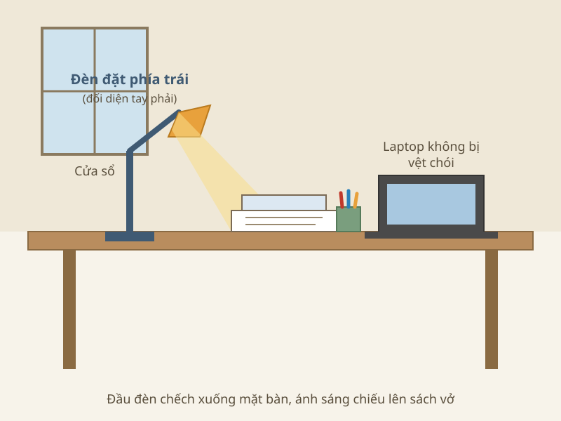

Chọn và bố trí đèn bàn làm việc cho góc học tập nhỏ
Tác giả: Ruler
Bạn ngồi học buổi tối, đèn bàn bật sáng, vậy mà mắt vẫn mỏi sau chưa đầy một giờ. Bạn vặn đèn sáng hơn, trang sách rõ hơn nhưng màn hình laptop lại lóa lên một vệt sáng trắng. Vấn đề thường không nằm ở chiếc đèn đắt hay rẻ, mà nằm ở chỗ đặt đèn và cách chọn đèn chưa hợp với việc bạn đang làm.
Bài này chỉ đi vào một việc: chọn đèn bàn và bố trí đèn bàn cho góc học tập nhỏ, sao cho mắt đỡ mỏi, trang giấy không bị bóng tay che và màn hình không bị chói. Cây cảnh và hoa tươi trên bàn làm việc không thuộc phạm vi bài này. Cách sắp xếp góc làm việc nói chung và cách đi dây, giấu dây cáp cũng vậy — hai việc đó đã có trong bài trang trí góc làm việc tại nhà và bài sắp xếp, giấu dây cáp trên bàn làm việc, bài này không nhắc lại.
Vì sao đèn bàn hay làm mỏi mắt
Mỏi mắt khi học dưới đèn bàn thường đến từ bốn nguyên nhân, và mỗi nguyên nhân cần một cách xử lý khác nhau.
Thứ nhất là bóng đổ: khi đèn đặt cùng phía với tay viết, bàn tay và cánh tay của bạn che mất ánh sáng ngay trên dòng chữ bạn đang viết, khiến bạn phải nghiêng người hoặc dịch vở để đọc, mắt điều tiết nhiều hơn và cổ cũng mỏi theo.
Thứ hai là chói trực tiếp: bóng đèn lộ ra ngoài, không có chao che, hoặc chao đèn hắt ánh sáng thẳng vào mắt bạn, sẽ tạo một điểm sáng gắt trong tầm nhìn. Bạn có thể không nhận ra điểm sáng đó ngay, vì bạn đang nhìn xuống trang sách.
Thứ ba là chói phản xạ: ánh sáng từ đèn dội ngược từ màn hình laptop, mặt bàn bóng hay bìa sách bóng loáng vào mắt bạn. Vệt sáng trên màn hình làm chữ khó đọc, và bạn có xu hướng tăng độ sáng màn hình để át vệt sáng đó.
Thứ tư là tương phản quá lớn giữa vùng sáng và vùng tối: một chiếc đèn mạnh chiếu xuống mặt bàn trong căn phòng tối om sẽ tạo một vũng sáng nhỏ giữa bóng tối. Mỗi lần bạn ngẩng lên khỏi trang sách, mắt phải thích nghi từ sáng sang tối rồi lại từ tối sang sáng. Hướng dẫn về giảm mỏi mắt khi học dưới đèn bàn lưu ý rằng một vũng sáng gắt bao quanh bởi bóng tối có thể gây khó chịu, dù trung bình cả phòng có vẻ đủ sáng.
Vì vậy, bạn nên đặt đèn đúng chỗ trước, rồi mới chỉnh độ sáng cho vừa.
Đặt đèn theo hướng tay thuận
Nguyên tắc đầu tiên khi đặt đèn là để đèn nằm ở bên ngược với tay bạn cầm bút: tay phải cầm bút thì đèn để bên trái bàn, tay trái cầm bút thì đèn để bên phải. Đặt như vậy, ánh sáng rọi qua tay bạn mà không bị chính tay bạn chặn lại, nên bóng tay không phủ lên dòng chữ đang viết. Hướng dẫn đặt đèn bàn của BenQ nêu rõ cách đặt này, kèm khoảng cách gợi ý khoảng 15 inch (gần 40 cm) từ đèn tới khu vực làm việc, và cho biết Hiệp hội Đo thị lực Hoa Kỳ (AOA) gợi ý độ sáng khoảng 450 lumen cho đèn học để đủ sáng mà không quá gắt.
Quy tắc này quan trọng nhất khi bạn viết tay, vẽ hoặc làm bài tập trên giấy. Khi bạn chủ yếu gõ bàn phím, phía đặt đèn ít quan trọng hơn: bạn nên chọn phía sao cho đèn không vướng tay cầm chuột và không gây phản xạ lên màn hình. Hướng dẫn của BenQ cũng nêu ngoại lệ này: với công việc chủ yếu là gõ bàn phím, bạn có thể đặt đèn phía sau màn hình hoặc ở giữa phía sau bàn, hướng ánh sáng xuống bàn phím.
Bạn nên hướng đầu đèn chếch xuống mặt bàn, khoảng 30 đến 45 độ, để ánh sáng phủ đều lên trang giấy mà không hắt vào mắt và không dội lên màn hình. Bạn ngồi vào ghế ở tư thế học bình thường rồi nhìn thẳng về phía trước: nếu bạn vẫn thấy bóng đèn, bạn nên hạ đầu đèn xuống hoặc xoay chao đèn thêm một chút.
Chiều cao của đèn cũng ảnh hưởng tới vùng sáng. Hướng dẫn của BenQ cho biết chiều cao lý tưởng của đèn bàn là khoảng 15–20 inch (khoảng 38–50 cm) tính từ mặt bàn lên tới đầu đèn, vì ở khoảng này ánh sáng phủ đủ rộng mà không quá gắt. Bạn nên chọn đèn có cần điều chỉnh được, để thay đổi chiều cao và góc chiếu khi đổi việc.
Không có một góc hay một khoảng cách duy nhất đúng cho mọi người: bạn nên thử trong tư thế ngồi học thật của mình, thay đổi một thứ mỗi lần, và giữ lại cách đặt nào làm mắt bạn dễ chịu hơn.
Chọn đèn cho bàn nhỏ: càng ít chiếm chỗ càng tốt
Góc học tập nhỏ thường chỉ có một chiếc bàn vừa đủ đặt laptop, vài cuốn sách và một hộp bút, nên chiếc đèn bạn chọn phải tiết kiệm chỗ. Bạn nên đo mặt bàn trước khi mua đèn.
Đèn kẹp mép bàn là lựa chọn hợp nhất cho bàn nhỏ: một chiếc kẹp gắn vào mép bàn, không cần đế đặt trên mặt bàn, nên mặt bàn của bạn còn nguyên chỗ để sách vở. Bạn nên kiểm tra độ dày mép bàn trước khi mua, vì kẹp chỉ mở được tới một độ dày nhất định.
Đèn thanh gắn trên màn hình là lựa chọn thứ hai, hợp với người chủ yếu dùng laptop hoặc màn hình rời. Thanh đèn gắn lên mép trên của màn hình, chiếu sáng xuống bàn phím và mặt bàn phía trước mà không chiếm một centimet mặt bàn nào. Tuy nhiên, thanh đèn này không chiếu sáng tốt cho sách giấy đặt bên cạnh laptop.
Đèn để bàn chân đế nhỏ là lựa chọn quen thuộc nhất, nhưng bạn nên chọn loại có đế hẹp và cần đèn gọn, không chọn loại đế to, chao lớn. Bạn nên đặt đèn ở góc sau của bàn, bên ngược với tay viết, và tránh loại đèn có cần cố định không xoay được, vì với bàn nhỏ, bạn sẽ cần xoay đèn nhiều lần trong ngày.
Dù chọn loại nào, bạn nên ưu tiên ba tính năng: cần đèn điều chỉnh được, chao đèn che được bóng đèn khỏi tầm mắt bạn, và nút chỉnh độ sáng dễ với tới. Hiệp hội Đo thị lực Hoa Kỳ cũng khuyên dùng đèn có chao che và cần điều chỉnh được.
Độ sáng và màu ánh sáng: chọn theo việc đang làm
Độ sáng của đèn thường ghi bằng lumen — tổng lượng ánh sáng đèn phát ra — và là con số bạn nên nhìn khi chọn đèn, thay vì nhìn công suất watt, vì watt chỉ cho biết đèn tốn bao nhiêu điện. Hướng dẫn chiếu sáng bàn học của Barcelona LED gợi ý một đèn bàn LED khoảng 400–800 lumen là đủ cho việc học, và khi kết hợp với ánh sáng chung trong phòng thì khoảng 400–600 lumen là đủ trong hầu hết trường hợp.
Một đơn vị khác bạn có thể gặp là lux, đo độ sáng thực tế trên một bề mặt: một lux bằng một lumen trên một mét vuông. Hướng dẫn của Barcelona LED gợi ý khoảng 300–500 lux trên mặt bàn cho việc học và làm việc văn phòng, và khoảng 500 lux trở lên cho công việc cần nhìn chi tiết như vẽ kỹ. Bạn không cần mua máy đo lux; bạn chỉ cần biết rằng đèn bàn tốt phải làm mặt bàn sáng đều, và bạn không phải nheo mắt hay cúi sát mới đọc được chữ.
Màu ánh sáng ghi bằng Kelvin, viết tắt là K. Kelvin càng thấp thì ánh sáng càng ấm, càng vàng; Kelvin càng cao thì ánh sáng càng trắng, càng lạnh. Hướng dẫn của Barcelona LED chia ba khoảng: 2.700–3.000 K là ánh sáng ấm, 3.500–4.000 K là ánh sáng trung tính, 5.000–6.500 K là ánh sáng lạnh. Với việc học, nguồn này gợi ý khoảng 3.500–4.000 K, vì ánh sáng trung tính đủ rõ để tập trung mà không lạnh và gắt như ánh sáng trên 5.000 K.
Bạn nên chọn đèn chỉnh được cả độ sáng lẫn màu ánh sáng, vì nhu cầu của bạn thay đổi trong ngày: buổi chiều đọc sách giấy cần ánh sáng rõ hơn, buổi tối muộn ghi chép nhẹ thì giảm độ sáng và chuyển sang ánh sáng ấm hơn. Bạn cũng nên chọn đèn có chỉ số hoàn màu (CRI) từ 80 trở lên và ghi rõ "không nhấp nháy" trên bao bì.
Bạn cần lưu ý một giới hạn quan trọng: không có một mức độ sáng, một màu ánh sáng hay một khoảng cách đèn nào được chứng minh là tối ưu về mặt y khoa cho mọi học sinh. Các con số trong bài này — 300–500 lux, 400–800 lumen, 3.500–4.000 K — là khoảng gợi ý thực hành từ các nguồn hướng dẫn, không phải đơn thuốc cho mắt.
Tránh chói vào màn hình: đặt đèn và màn hình thành một cặp
Chói trên màn hình là vấn đề riêng, khác với chói trên giấy, vì màn hình vừa phát sáng vừa phản xạ ánh sáng từ đèn, nên bạn cần xử lý đèn và màn hình cùng lúc.
Trước hết, bạn tìm vệt phản xạ. Bạn ngồi vào ghế ở tư thế học bình thường, mở màn hình lên, rồi nhìn xem có vệt sáng nào của đèn hay của chao đèn phản chiếu trên màn hình hay không. Nếu bạn thấy vệt sáng, bạn dịch đèn sang một bên, nâng hoặc hạ cần đèn, hoặc xoay chao đèn cho tới khi vệt sáng rời khỏi vùng bạn nhìn. Bạn chỉ nên chỉnh một thứ mỗi lần, để biết chính xác thay đổi nào có tác dụng.
Hướng dẫn của BenQ gợi ý đặt đèn bàn ở góc khoảng 45 độ và cách màn hình khoảng 20 inch (gần 50 cm) về phía bên hoặc phía sau màn hình, để ánh sáng dội vào mặt bàn thay vì chiếu thẳng vào màn hình hay vào mắt bạn. Hướng dẫn của Barcelona LED cũng gợi ý đặt đèn ở phía bên, cách mặt bàn khoảng 40–60 cm, hướng chùm sáng xuống mặt bàn cần chiếu.
Tiếp theo, bạn cân bằng độ sáng màn hình với độ sáng trong phòng. Bạn đặt một tờ giấy trắng cạnh màn hình: nếu tờ giấy sáng hơn hẳn màn hình, bạn nên giảm độ sáng đèn hoặc tăng độ sáng màn hình một chút; nếu tờ giấy tối hơn hẳn màn hình, bạn làm ngược lại. Cách kiểm tra này giúp mắt bạn không phải thích nghi liên tục giữa màn hình sáng và giấy tối.
Cuối cùng, bạn xử lý mặt bàn bóng. Mặt bàn kính, mặt bàn phủ bóng hay bìa sách bóng loáng đều có thể phản xạ ánh sáng đèn vào mắt bạn, dù đèn đã đặt đúng phía. Bạn có thể đặt một tấm lót bàn mờ lên mặt bàn, hoặc trải một tấm giấy lớn dưới sách vở khi học, để ánh sáng không dội ngược lên. Nếu vệt chói vẫn còn, bạn có thể cân nhắc dùng tấm dán màn hình chống chói.
Ban ngày và buổi tối: đèn bàn không đứng một mình
Đèn bàn là đèn làm việc, không phải là nguồn sáng duy nhất của góc học tập. Ban ngày, bạn nên đặt bàn sao cho cửa sổ ở phía bên cạnh bạn, để ánh sáng tự nhiên chiếu ngang qua mặt bàn. Bạn nên tránh đặt bàn quay lưng ra cửa sổ hay đối diện thẳng cửa sổ. Buổi tối, bạn nên bật thêm đèn trần hoặc đèn tường trong phòng, dù đèn bàn đã đủ sáng cho trang sách. Hướng dẫn của Barcelona LED nêu rõ: chỉ dùng đèn bàn sẽ làm phần còn lại của phòng quá tối, còn chỉ dùng đèn trần thì không đủ sáng cho việc đọc chi tiết.
Cách thử và chỉnh đèn trong mười phút
Bạn không cần mua đèn mới để biết đèn hiện tại đã đặt đúng hay chưa: bạn chỉ cần mười phút ngồi thử với đèn đang có, và chỉ thay đổi một thứ mỗi lần. Thời gian mười phút này chỉ là ước chừng, chưa đo thực tế.
- Viết thử vài dòng: tắt đèn trần, chỉ bật đèn bàn, ngồi vào ghế ở tư thế học bình thường và viết vài dòng. Nếu bóng tay đổ lên dòng chữ, dịch đèn sang bên ngược với tay viết.
- Kiểm tra chói trực tiếp: nhìn thẳng về phía trước rồi liếc sang hai bên. Nếu thấy bóng đèn hay chao đèn sáng chói, hạ đầu đèn xuống hoặc xoay chao đèn.
- Kiểm tra màn hình: mở laptop lên xem có vệt phản xạ của đèn hay không. Nếu có, dịch đèn sang bên hoặc ra phía sau màn hình.
- Bật thêm đèn trong phòng: bật đèn trần lên rồi ngồi học thử vài phút. Nếu mắt dễ chịu hơn, bạn nên bật cả hai loại đèn mỗi buổi tối.
Khi nào nên dừng và nhờ người có chuyên môn
Đèn bàn chỉ giải quyết được vấn đề ánh sáng. Nếu đèn bàn của bạn có dây điện bị sờn, phích cắm lỏng, đèn chập chờn khi chạm vào, hoặc có mùi khét khi bật, bạn nên rút phích cắm ra và không dùng đèn đó nữa. Bạn không nên tự tháo đèn ra sửa hay tự đấu nối lại dây điện trong nhà; bạn nên nhờ thợ điện kiểm tra, hoặc thay đèn mới.
Nếu mắt bạn vẫn đau, đỏ kéo dài, nhìn mờ, chảy nước mắt hay nhạy cảm với ánh sáng dù đã đặt đèn đúng cách, bạn nên đi khám mắt, vì đèn tốt không thay thế được việc khám mắt. Một thói quen tốt đi kèm với đèn đặt đúng là quy tắc 20-20-20: cứ sau 20 phút nhìn gần, bạn nhìn ra xa khoảng 20 feet (khoảng 6 mét) trong ít nhất 20 giây.
Kết luận
Nói gọn lại, một góc học tập nhỏ chỉ cần đèn đặt đúng bên, chĩa đúng hướng và sáng vừa đủ: đèn nằm ở bên ngược với tay cầm bút, đầu đèn chếch xuống mặt bàn khoảng 30–45 độ, độ sáng khoảng 400–800 lumen, màu ánh sáng trung tính khoảng 3.500–4.000 K, cộng thêm ánh sáng chung trong phòng vào buổi tối. Ba điểm cần nhớ là: ánh sáng không bị tay che, không chiếu vào mắt, và không để đèn bàn sáng một mình giữa phòng tối.
Nguồn tham khảo
- BenQ, "How to Master Desk Lamp Placement: A Practical Guide" — dùng cho các khẳng định: đặt đèn ở phía đối diện tay thuận, khoảng 15 inch từ đèn tới khu vực làm việc; Hiệp hội Đo thị lực Hoa Kỳ (AOA) gợi ý độ sáng khoảng 450 lumen cho đèn học; đặt đèn ở góc 45 độ, cách màn hình khoảng 20 inch về phía bên hoặc phía sau để tránh chói màn hình; chiều cao đèn lý tưởng khoảng 15–20 inch trên mặt bàn; đèn kẹp mép bàn và thanh đèn gắn màn hình tiết kiệm chỗ cho bàn nhỏ (truy cập 23/11/2026): https://www.benq.com/en-us/knowledge-center/knowledge/how-to-master-desk-lamp-placement-guide.html
- Barcelona LED, "Desk lighting: a guide for studying and working from home" — dùng cho các khẳng định: khoảng 300–500 lux trên mặt bàn cho việc học, đèn bàn LED khoảng 400–800 lumen, nhiệt độ màu 3.500–4.000 K; phân loại ánh sáng ấm 2.700–3.000 K, trung tính 3.500–4.000 K, lạnh 5.000–6.500 K; chỉ số hoàn màu CRI từ 80 trở lên, từ 90 trở lên cho việc cần nhìn chi tiết; đặt đèn ở phía bên, cách mặt bàn làm việc khoảng 40–60 cm, hướng chùm sáng xuống mặt bàn; kết hợp ánh sáng chung với đèn bàn, chỉ dùng đèn bàn sẽ làm phần còn lại của phòng quá tối (truy cập 23/11/2026): https://www.barcelonaled.com/en-hr/blogs/blogbled/desk-lighting-studying-teleworking
- UMA Technology, "How to Reduce Eye Strain Under a Desk Lamp: Setup, Glare and Breaks" — dùng cho các khẳng định: Hiệp hội Đo thị lực Hoa Kỳ (AOA) khuyên dùng đèn có chao che và cần điều chỉnh được để ánh sáng tập trung vào sách vở mà không lọt thẳng vào mắt; đặt đèn ở phía đối diện tay viết để tránh bóng tay; kiểm tra vị trí đèn khi đang ngồi ở tư thế học thật, thay đổi một thứ mỗi lần, không có một góc hay khoảng cách duy nhất đúng cho mọi người; một vũng sáng gắt giữa phòng tối có thể gây khó chịu; quy tắc 20-20-20 của Hiệp hội Nhãn khoa Hoa Kỳ (AAO): cứ 20 phút nhìn xa ít nhất 20 feet trong ít nhất 20 giây; nếu mắt khó chịu kéo dài thì nên đi khám mắt (truy cập 23/11/2026): http://umatechnology.org/how-to-reduce-eye-strain-when-studying-under-a-desk-lamp/
Phương án ảnh

Đây là sơ đồ minh họa, không phải ảnh chụp thực hành